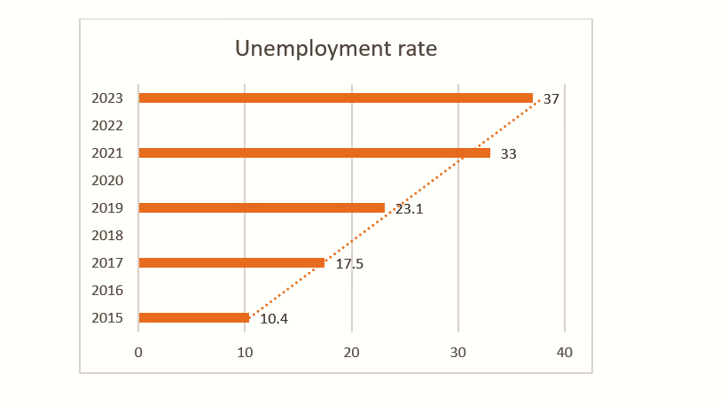

Nigeria's Macro-Economic Analysis for the Year 2015-2023.

Data Source 1: DMO Office
Data Source 2: CBN.GOV.NG
Softwares: Microsoft Excel with slicers
Outline
1. Data Gathering
2. Exracting key points from Analysis
3. Conclusion
1. Data gathering
Data used in this project was gathered from several sources, majorly the data sources listed above.Disclaimer: Note that there may be some discrepancies in significant digits. However, data used in this report is 95-99% correct to the nearest whole number.
2. Extracting key points from Analysis
Public Debt
Debt to Revenue ratio
Inflation rate
Inflation rate has moved from 9.01% in 2015 to 16.95% as at 2021 to 21.82% in 2023. This indicates a 142% increase in 8 years.
Exchange rate
The nation's currency have been seen to weaken in its value as a result of its equivalence in the international market. Exchange rate to dollar have increased from 165naira to a dollar in 2015 to averagely 640naira to a dollar despite several policies to mop up excess liquidity, reduce the demand pressure on the naira to prevent its depreciation. This effect have been responsible for the huge deficit recorded in the country's balance of trade and payment, an increase in cost of production and a reduction in Foreign Direct Investment.GDP per capita
The GDP percapita which is a measure of the economic output per person has experienced a series of upward and downward trend across the years. A high GDP percapita is recordeed in 2023 as compared to the previous years, however, this usually does not imply a high level of household income or a good well being of the people. Hence wealth made does not translate to an increase to the size of the people's purse. Since data has shown that a large percentage is used in servicing the nation's accuring debt.'Unemployment rate
Several factors including those highlighted as responsible for the results above has contributed to a high rate of unemployment.

Nigeria's rate of unemployment has increased averagely at the same rate since 2015 leading to a perfect linearity shown in the result above.